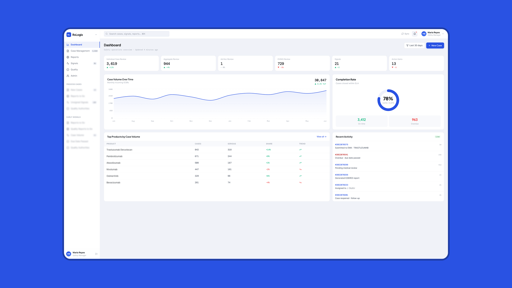
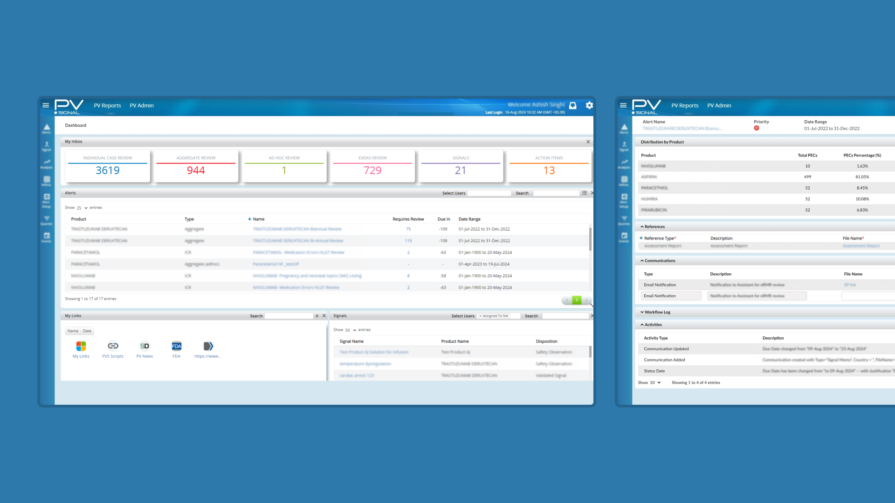
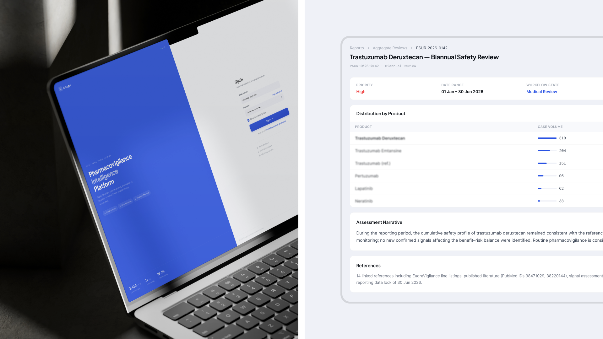
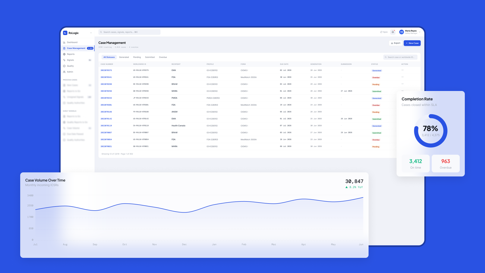
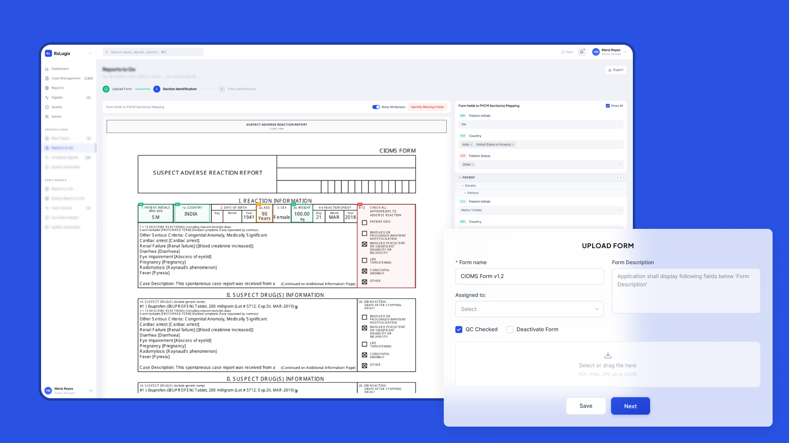
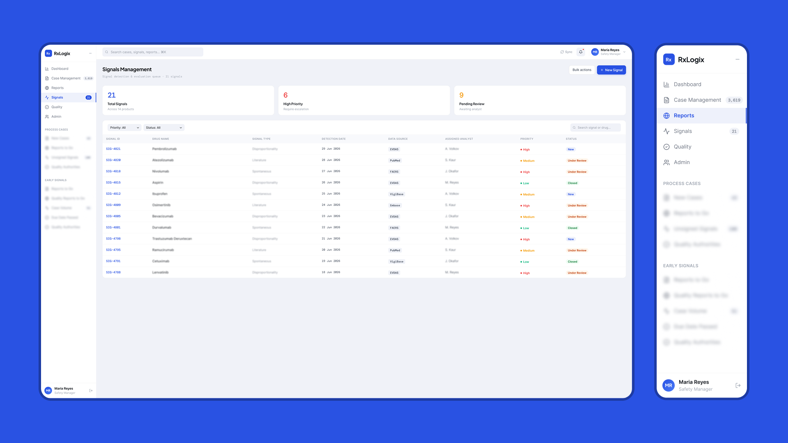
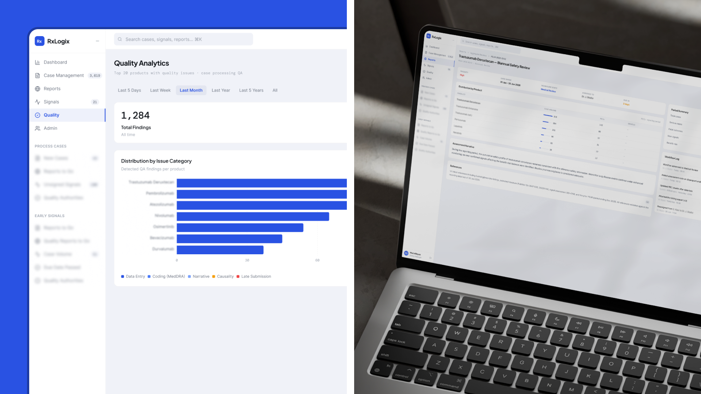

RxLogix Corporation · Jan 2025 – Present · US, remote
Twelve steps to five — and the insight that made it possible
Simplifying a pharmacovigilance workflow for medical staff who don’t have time to think about the interface.
Results
12 steps → 5 steps
58% reduction in workflow complexity.
~80% of data entry automated
AI-assisted recognition reads incoming result images and auto-fills report fields, with a confidence score flagging only sub-threshold entries for human verification — turning an hours-long transcription process into a fast verification step.Estimated from the observed recognition-confidence distribution.
Compliance maintained
All regulatory requirements preserved throughout the redesign.
Cognitive load significantly reduced
Fewer errors and incomplete submissions reported by clinical staff.
From universal to personalised reporting
Specialists gained data tables scoped to their own clinical indicators, a one-tap switch between global and personalised views, and reusable report templates — replacing manual, multi-report assembly.
Improved sprint predictability
Structured handoff documentation reduced engineering clarification cycles.
"I would highly recommend Sergii for strong expertise in UI/UX design and his ability to translate complex requirements into intuitive, user-friendly, and visually engaging mockups. Sergii has good understanding of user experience principles and is particularly effective at structuring workflows, simplifying complex processes, and creating designs that are both functional and aesthetically polished."
Situation
RxLogix builds pharmacovigilance software — the systems that track adverse drug event reports for clinical and regulatory teams. The platform had grown around technical requirements rather than how staff actually worked: a 12-step process causing high cognitive load, frequent errors, and mounting frustration flagged through support feedback.
You can’t simplify a compliance workflow by deleting steps regulators require. The real question wasn’t “make this shorter” — it was which of the 12 steps were doing actual regulatory work, and which had just accumulated.
Deciding insight
Mapping actual task flow against the designed flow, and cross-checking every step against PRD and compliance documentation with QA, surfaced the deciding fact: 7 of the 12 steps existed because of legacy system logic, not clinical or regulatory need — compliance mandated only 5 decision points.
That reframed the whole project — not “redesign a workflow,” but remove exactly the seven steps that were never required.
Research
Research also surfaced a human pattern behind the numbers: staff who’d grown with the system’s complexity had adapted to the friction, while newer hires — used to modern software — felt it far more acutely. That gap showed up in both productivity and reported satisfaction, and confirmed the fix needed to be structural, not just a training issue.




Approach
Merged related data-entry steps into unified, contextual screens. Added progressive disclosure so only relevant fields show at each stage. Cut redundant confirmation steps. Validated every reduction with clinical staff before it shipped.
A second, parallel problem: reporting had outgrown its users. As the platform’s functionality expanded, reporting became more generalised — and less useful for any single specialist’s daily queries. The fix wasn’t more features, it was personalisation: data tables scoped to each specialist’s role, a one-tap toggle between global and personalised views, and reusable report templates replacing manual, multi-report assembly.
AI assist
Lab results arrived as scanned images staff transcribed by hand. AI-assisted recognition now auto-fills report fields directly from those images — handling roughly 80% of entries without human input (estimated from the observed recognition-confidence distribution).
A confidence score routes anything below threshold to a specialist, and every recognised value links back to its exact source. Compliance stays intact: nothing ships without either model confidence or a human sign-off.


